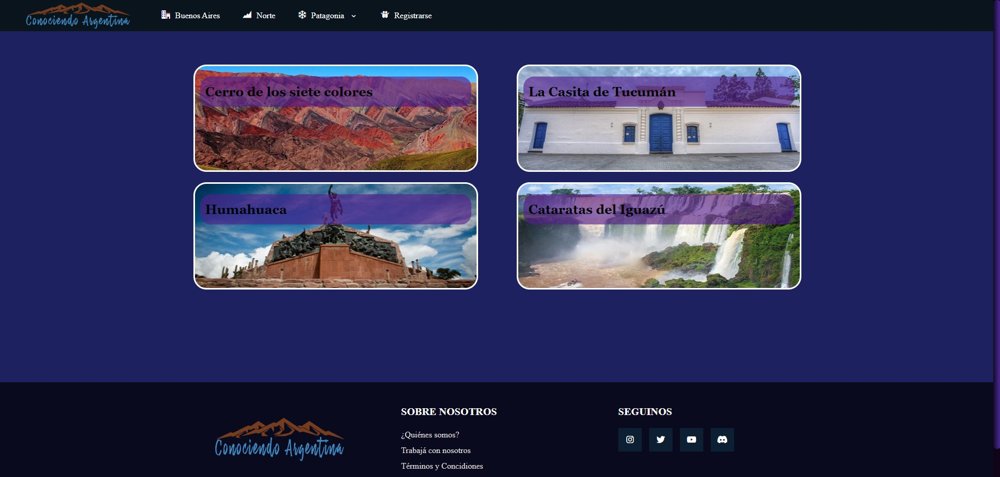

Lucas Couttulenc
Actualmente cursando mi 3er año de de Licenciatura en Análisis de Sistemas, en la UBA
Desde la secundaria me interesó la programación y comencé a hacer mini proyectos. Estos principalmente consistían en simples juegos 2D tales como un clásico juego de plataformas en Unity, o un Pac-Man. Si bien no los programé con lenguajes complejos y los realicé con la ayuda que brinda la aplicación que utilicé para cada uno (además de videos y otros recursos), me sirvieron mucho para sentar las bases de la programación y adentrarme mucho en el mundo del software.

-

Unity
-

C#

GameMaker
Luego hice los tres proyectos principales de las materias 'Algoritmos y Programación' (I, II, y III).
Por último, estoy desarrollando el proyecto más completo que hice, el Black Jack Simulator, cuya descripción está en la página principal.

Sitios web
En cuanto a sitios web, realicé un curso cuatrimestral en 2021. En este, realicé dos páginas web donde puse en práctica lo aprendido. Recientemente, realicé este portfolio, donde pude retomar HTML, CSS y JavaScript.
Código
Por último, estoy desarrollando 'My Marvel List', una página más completa, que requiera una base de datos.
Además, que sea útil para terceros.

Diseño Gráfico
El año 2025 comencé a estudiar Diseño Gráfico Digital en la Escuela Da Vinci, ya que siempre me gustó el diseño. Por lo que tengo conocimiento y práctica en Adobe Photoshop y Adobe Illustrator. Aquí algunas cosas que hice...


Otras Aficiones
En 2023 comencé un emprendimiento de impresión 3D, donde me apasioné también en el diseño 3D. Aquí algunas cosas que hice en AutoDesk Fusion 360...